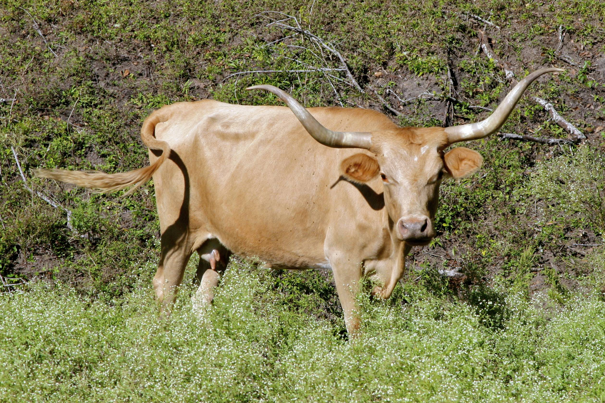
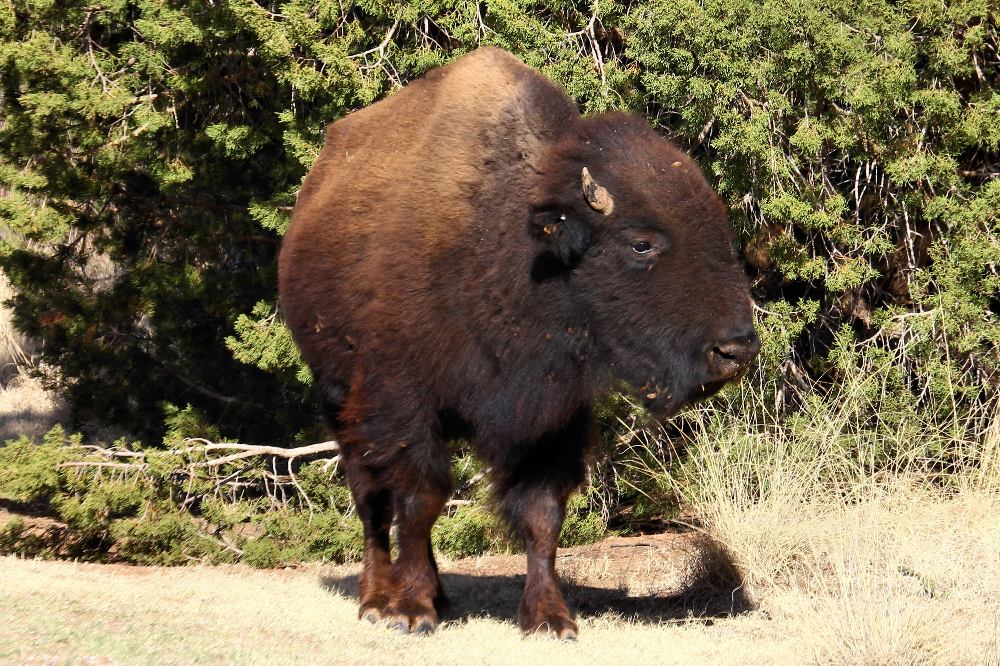
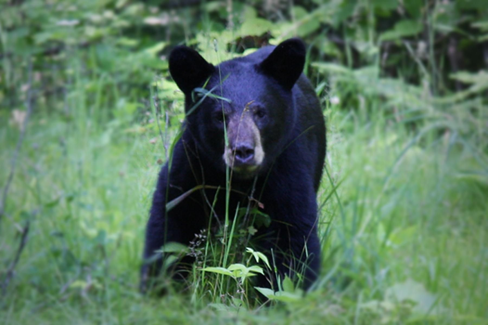
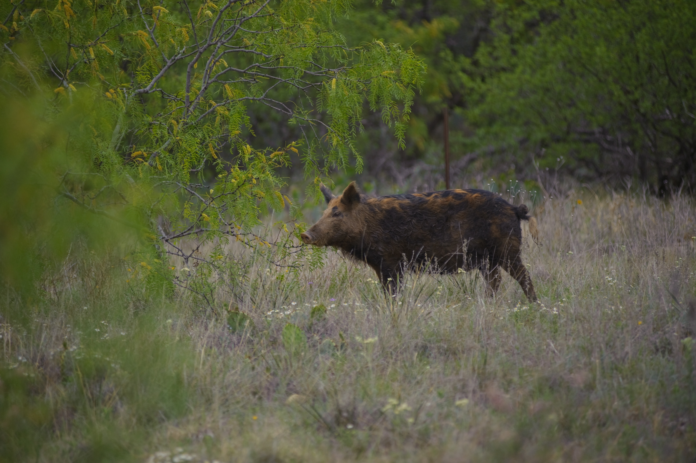
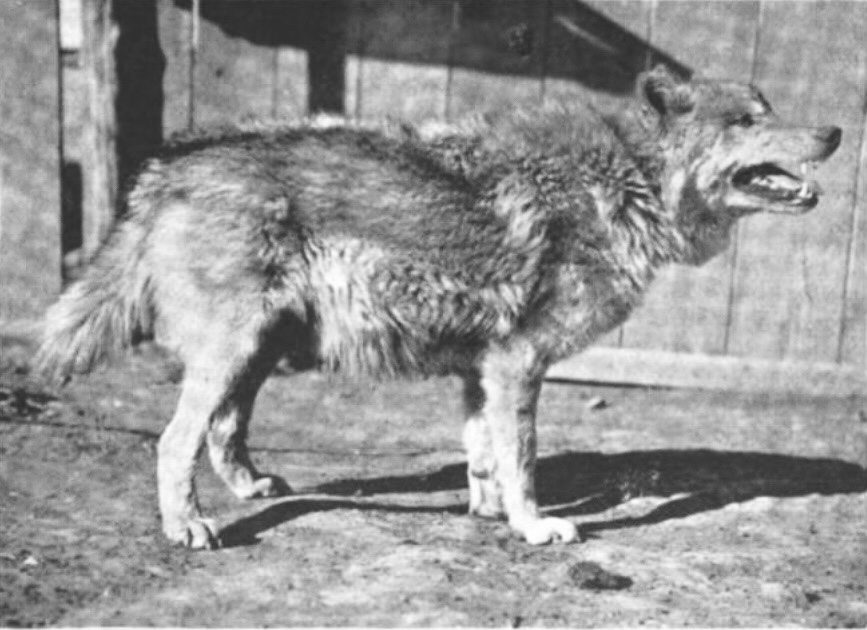
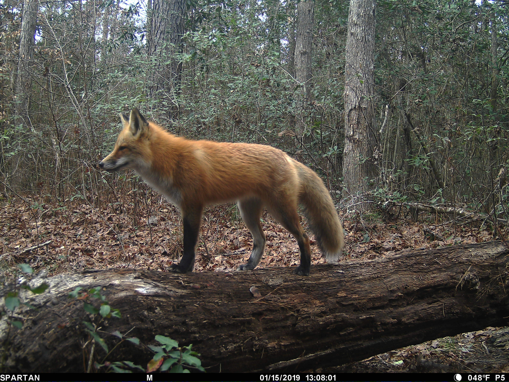
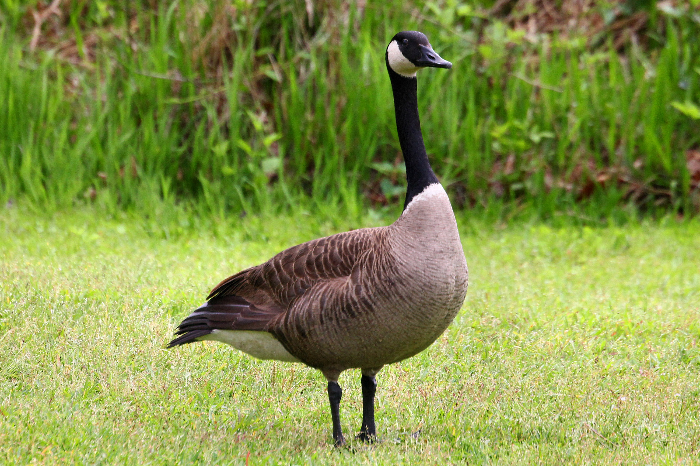
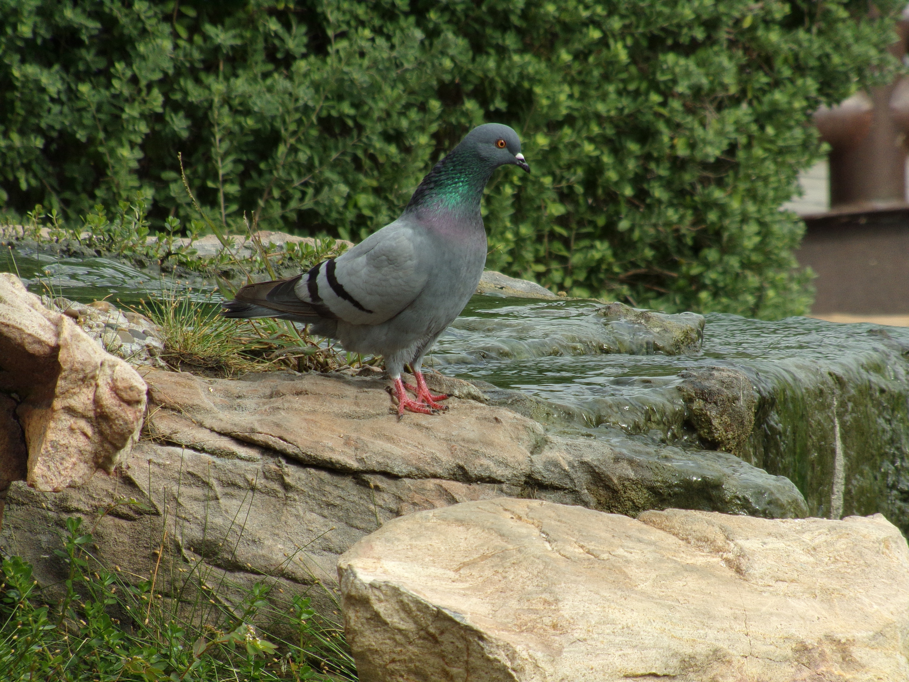

Texas Longhorn
The iconic Texas Longhorn is one of the most recognized symbols of Texas's ranching heritage, known for its distinctive long, curved horns. These cattle were essential to early settlers and cattle drives, thriving in harsh conditions with minimal care. However, by the late 1800s, as ranchers shifted to breeds that produced more beef and fat, the Texas Longhorn population sharply declined, putting the breed at risk for extinction. E. H. Marks of the LH7 Ranch played a key role in preserving the Longhorn by hand-selecting traditional animals to maintain their unique genetics and promote breeding programs. Today, Texas Longhorns remain a living symbol of Texas history and resilience.


Image: Ed Schipul / Flickr, CC-BY-SA 2.0
Sources: Sizemore, Deborah Lightfoot. "The History of LH7 Ranch." Texas State Historical Association, 2020. Accessed 3 Jan. 2026.
American Bison
Great herds of American bison were a defining sight on the Texas coastal prairies before European settlement. They used to graze vast expanses of grassland near present-day Katy. As settlers arrived during the 1800s, bison were hunted for their meat and hides, and their habitat was converted to farmland and ranches. By the late 1800s, wild bison had disappeared from the region. Today, they are well outside the region of Katy and Houston.


Image: Larry D. Moore / Wikimedia Commons, CC-BY 4.0
Sources: Alvarez, Elizabeth Cruce, and Robert Plocheck. "Texas Almanac 2014–2015". Texas A&M University Press, 2014. Accessed 3 Jan. 2026.
Bear
The American black bear historically ranged into far eastern and southeastern parts of Texas, and these bears would occasionally travel through prairies and forests near Katy. However, heavy hunting and loss of wooded habitat in the 1800s and early 1900s caused bears to vanish from most of Texas, including the Katy area. Today, occasional sightings in the broader Houston region are extremely rare.

Image: Michelle Buntin / Wikimedia Commons, Public Domain
Sources: Wikipedia Contributors. "Big Thicket." Wikipedia, Wikimedia Foundation, 22 Dec. 2025. Accessed 3 Jan. 2026.
Hog
Feral hogs (wild pigs) are an increasingly common wildlife presence in Katy. Introduced long ago by European settlers, these animals thrive in forest edges, parks, and even subdivisions. As Katy's development expands into former wildlands, hogs are being pushed into neighborhoods, creating damage to yards and parks. Local trapping programs have removed many from some neighborhoods, but feral hogs remain a persistent challenge throughout the area.

Image: USDA NRCS Texas / Flickr, CC-BY 2.0
Sources: Clark, Natalie Cook. "Rain Stirs up Feral Hogs in Katy Neighborhoods." Katy Magazine, 21 Mar. 2024. Accessed 3 Jan. 2026.
Wolf
Wolves, especially Texas Gray Wolves, roamed across much of Texas, including the prairie lands around what is now Katy. Over time, as settlers arrived and agriculture expanded, wolves were removed from the region through hunting and habitat loss. By the early 20th century, native wolves were effectively eliminated from Texas and are no longer part of the Katy ecosystem.

Image: American Farmer Magazine, Vol. 4, p. 201, 1898 / Wikimedia Commons, Public Domain
Sources: Dubois, Scott. "Harris County Wolves – 1938." Wildtexashistory.com, 1 Apr. 2020. Accessed 3 Jan. 2026.
Fox
Foxes are part of the native mammal community across the Katy region, using wooded edges, creeks, and undeveloped lots for hunting and thriving. They feed on rodents, rabbits, and birds and are occasionally seen at dawn or dusk near neighborhoods or parks. While they generally avoid people, foxes adapt well to suburban environments.

Image: National Park Service (trail camera) / Wikimedia Commons, Public Domain
Sources: Wikipedia Contributors. "Texas Blackland Prairies." Wikipedia, Wikimedia Foundation, 19 Sept. 2019. Accessed 3 Jan. 2026.
Canadian Goose
Large flocks of migratory Canadian geese used to extensively pass through the Katy region seasonally, drawn to the rice fields, ponds, and waterways near town. However, the population of these birds has severely decreased due to the loss of rice fields and the urbanization boom. These birds have become an important symbol of Katy's connection to its natural prairie and agricultural heritage.

Image: Larry D. Moore / Wikimedia Commons, CC-BY 4.0
Sources: Clark, Gary. "Migratory Birds Spend Winter on Katy Prairie." Chron, 7 Nov. 2008. Accessed 3 Jan. 2026.
Pigeon
Rock pigeons, the gray city pigeons seen around buildings, parks, and parking lots in Katy, are not native wild birds but descendants of domesticated birds brought from Europe. These birds thrive in urban and suburban areas by feeding on seeds, human food scraps, and nesting on ledges and structures. Unlike the numerous large mammals that vanished from Texas in earlier times, pigeons are abundant and a common sight in the modern Katy landscape.

Image: RobertKixmiller / Wikimedia Commons, CC-BY-SA 4.0
Sources: Texas Parks and Wildlife. "Rock Pigeon (Columba Livia)." Tpwd.texas.gov. Accessed 3 Jan. 2026.